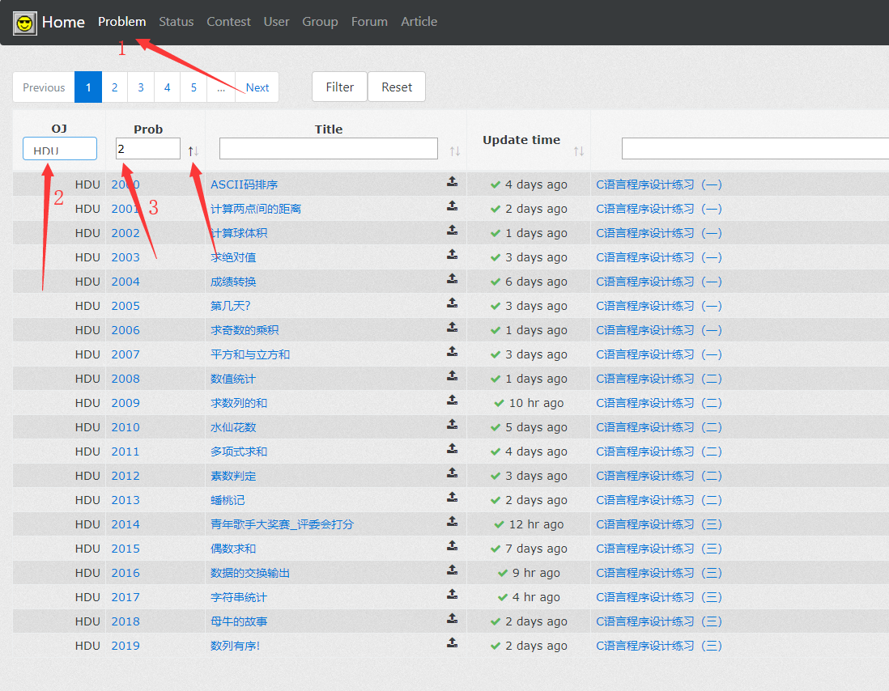
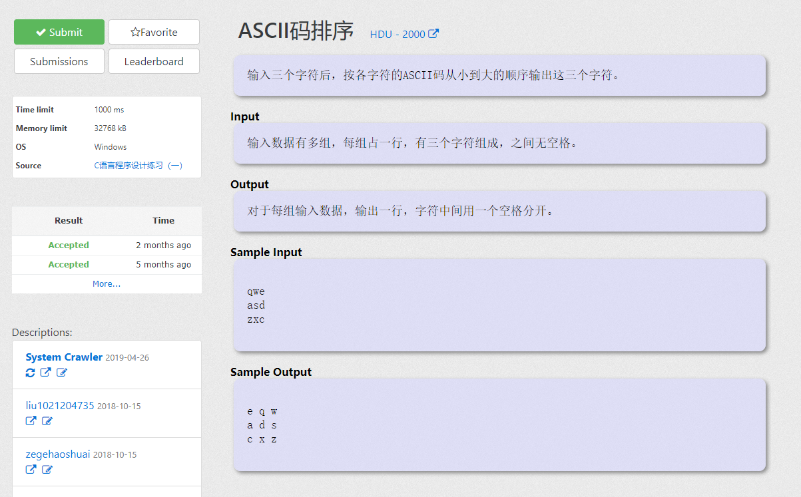
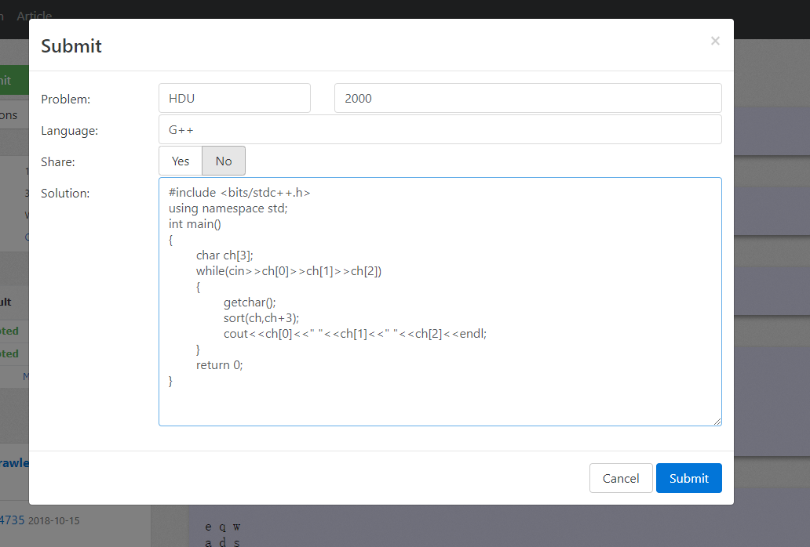
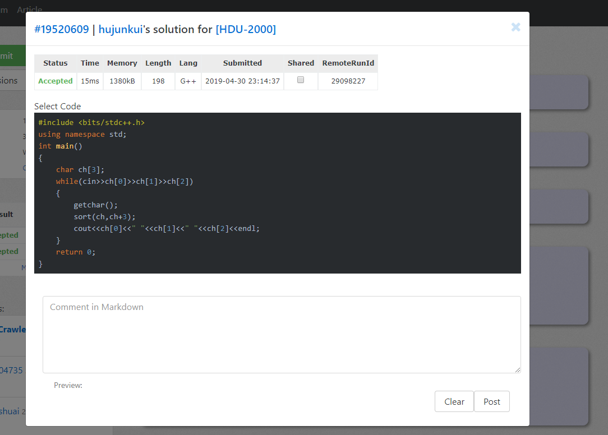

如何使用VJudge平台刷题
1.如何找到题
对于ACM刚入门的新手，建议先刷一刷HDU上著名的100道水题（2000 - 2099），熟悉一下竞赛的基本套路，首先在首
页点击Problem然后选择OJ源为HDU，然后再Prob中输入2，最后点击排序箭头进行排序。

### 2.如何做题 现在我就拿HDU2000这道题举例子，点击题目名称进入题目页面， 不要点击题号，点题号会进入题目的原网站。在本地 编写并调试好代码后点击左上角的Submit进入提交页面进行提交。
在language选项框中选择语言，然后在Solution框中拷贝上自己的代码，最后点右下角的Submit进行提交。

最后可以看到自己的提交状态

下面是常见的OJ评判结果以及它们表示的意思：
Queuing : 提交太多了，OJ无法在第一时间给所有提交以评判结果，后面提交的程序将暂时处于排队状态等待OJ的评
判。不过这个过程一般不会很长。
Compiling : 您提交的代码正在被编译。
Running : 您的程序正在OJ上运行。
Judging : OJ正在检查您程序的输出是否正确。
Accepted (AC) : 您的程序是正确的，恭喜！
Wrong Answer (WA) : 输出结果错，这个一般认为是算法有问题。
Time Limit Exceeded (TLE) : 您的程序运行的时间已经超出了这个题目的时间限制。
Memory Limit Exceeded (MLE) : 您的程序运行的内存已经超出了这个题目的内存限制。
Output Limit Exceeded (OLE) : 您的程序输出内容太多，超过了这个题目的输出限制。
Compilation Error (CE) : 您的程序语法有问题，编译器无法编译。具体的出错信息可以点击链接察看。
Presentation Error (PE) : 虽然您的程序貌似输出了正确的结果，但是这个结果的格式有点问题。请检查程序的
输出是否多了或者少了空格（' '）、制表符（'\t'）或者换行符（'\n'）。
Runtime Error (RE) : 运行时错误，这个一般是程序在运行期间执行了非法的操作造成的。以下列出常见的错误类
型：
ACCESS_VIOLATION 您的程序想从一些非法的地址空间读取或向其中写入内容。一般例如指针、数组下标越界都会造
成这个错误的。
ARRAY_BOUNDS_EXCEEDED 您的程序试图访问一个超出硬件支持范围的数组单元。
FLOAT_DENORMAL_OPERAND 进行了一个非正常的浮点操作。一般是由于一个非正常的浮点数参与了浮点操作所引起的
，比如这个数的浮点格式不正确。
FLOAT_DIVIDE_BY_ZERO 浮点数除法出现除数为零的异常。
FLOAT_OVERFLOW 浮点溢出。要表示的数太大，超出了浮点数的表示范围。
FLOAT_UNDERFLOW 浮点下溢。要表示的数太小，超出了浮点数的表示范围。
INTEGER_DIVIDE_BY_ZERO 在进行整数除法的时候出现了除数为零的异常。
INTEGER_OVERFLOW 整数溢出。要表示的数值太大，超出了整数变量的范围。
STACK_OVERFLOW 栈溢出。一般是由于无限递归或者在函数里使用了太大的数组变量的原因。顾名思义，stack
overflow 就是是栈溢出了。在进行数值运算时，我们常常要和运算结果的溢出打交道。数值运算结果可能上溢
（overflow），也可能是下溢（underflow）。不过栈的溢出显然只可能是上溢，即栈空间被用完了。
要正确处理栈溢出采用以下办法：
（1）修正我们的程序，不要造成无穷递归或太深的递归。我们可以把某些递归代码非递归化，例如那个经典的
qsort ，最好就用非递归的算法来实现，就比较皮实一点。
（2）修正我们的程序，不要定义过大的局部变量，特别是在定义大结构、大数组时要格外小心。有时我们可能会用
_alloca() 这样的特殊函数直接在栈上分配空间，更要多加注意。可以定义成static
（3）利用编译器的特性，将进程允许的栈大小设置得大一些。例如可以采用 MSC 中的 /STACK 参数开关。
（4）对于那些还可能导致栈溢出的代码，采用 Microsoft 的结构化异常处理或标准的 C++ 异常处理机制，结合
_resetstkoflw() 进行处理。当然了，要是不嫌麻烦，我们也可以自己探测所用栈的大小，动态地检测是否可能导
致
栈溢出，以避免可能的异常。
...... 其他错误，包括C++标准库/STL运行时库错误等，这里不再举例。